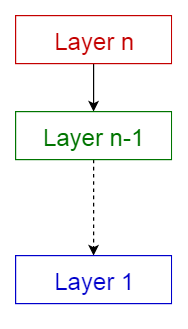
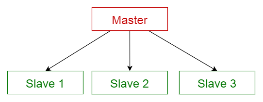
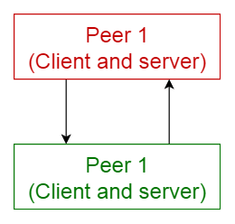
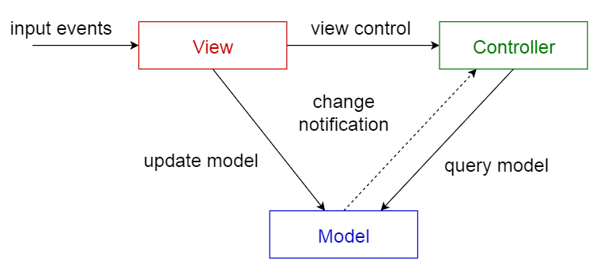

[번역] 10가지 소프트웨어 아키텍처 패턴 요약
Sep 10, 2017 00:00 · 3523 words · 8 minute read
10 Common Software Architectural Patterns in a nutshell을 번역한 글입니다.
대형 엔터프라이즈 규모의 시스템들은 어떻게 설계되었는지에 대해 궁금해 한 적이 있나요? 우리는 주요 소프트웨어를 개발하기 전에 원하는 기능과 품질을 제공해줄 수 있는 적절한 아키텍쳐를 선택해야합니다. 따라서, 우리는 설계 단계에서 특정 아키텍쳐를 적용하기 전에, 몇 가지 다양한 아키텍쳐들에 대해 이해할 필요가 있습니다.

아키텍쳐 패턴이란?
위키피디아에 따르면,
아키텍쳐 패턴이란 주어진 상황에서의 소프트웨어 아키텍쳐에서 일반적으로 발생하는 문제점들에 대한 일반화되고 재사용 가능한 솔루션이다. 아키텍쳐 패턴은 소프트웨어 디자인 패턴과 유사하지만 더 큰 범주에 속한다.
이 글에서는, 다음의 10가지 일반적인 소프트웨어 아키텍쳐 패턴들의 활용 사례와 장단점들을 간단하게 설명할 것이다.
- 계층화 패턴 (Layered pattern)
- 클라이언트-서버 패턴 (Client-server pattern)
- 마스터-슬레이브 패턴 (Master-slave pattern)
- 파이프-필터 패턴 (Pipe-filter pattern)
- 브로커 패턴 (Broker pattern)
- 피어 투 피어 패턴 (Peer-to-peer pattern)
- 이벤트-버스 패턴 (Event-bus pattern)
- MVC 패턴 (Model-view-controller pattern)
- 블랙보드 패턴 (Blackboard- pattern)
- 인터프리터 패턴 (Interpreter pattern)
1. 계층화 패턴 (Layered pattern)
이 패턴은 n-티어 아키텍쳐 패턴이라고도 불린다. 이는 하위 모듈들의 그룹으로 나눌 수 있는 구조화된 프로그램에서 사용할 수 있다. 각 하위 모듈들은 특정한 수준의 추상화를 제공한다. 각 계층은 다음 상위 계층에 서비스를 제공한다.
일반적인 정보 시스템에서 공통적으로 볼 수 있는 계층 4가지는 다음과 같다.
- 프레젠테이션 계층 (Presentation layer) - UI 계층 (UI layer) 이라고도 함
- 애플리케이션 계층 (Application layer) - 서비스 계층 (Service layer) 이라고도 함
- 비즈니스 논리 계층 (Business logic layer) - 도메인 계층 (Domain layer) 이라고도 함
- 데이터 접근 계층 (Data access layer) - 영속 계층 (Persistence layer) 이라고도 함
활용
- 일반적인 데스크톱 애플리케이션
- E-commerce 웹 애플리케이션

2. 클라이언트-서버 패턴 (Client-server pattern)
이 패턴은 하나의 서버와 다수의 클라이언트, 두 부분으로 구성된다. 서버 컴포넌트는 다수의 클라이언트 컴포넌트로 서비스를 제공한다. 클라이언트가 서버에 서비스를 요청하면 서버는 클라이언트에게 적절한 서비스를 제공한다. 또한 서버는 계속 클라이언트로부터의 요청을 대기한다.
활용
- 이메일, 문서 공유 및 은행 등의 온라인 애플리케이션
3. 마스터-슬레이브 패턴 (Master-slave pattern)
이 패턴은 마스터와 슬레이브, 두 부분으로 구성된다. 마스터 컴포넌트는 동등한 구조를 지닌 슬레이브 컴포넌트들로 작업을 분산하고, 슬레이브가 반환한 결과값으로부터 최종 결과값을 계산한다.
활용
- 데이터베이스 복제에서, 마스터 데이터베이스는 신뢰할 수 있는 데이터 소스로 간주되며 슬레이브 데이터베이스는 마스터 데이터베이스와 동기화된다.
- 컴퓨터 시스템에서 버스와 연결된 주변장치 (마스터 드라이버와 슬레이브 드라이버)

4. 파이프-필터 패턴 (Pipe-filter pattern)
이 패턴은 데이터 스트림을 생성하고 처리하는 시스템에서 사용할 수 있다. 각 처리 과정은 필터 (filter) 컴포넌트에서 이루어지며, 처리되는 데이터는 **파이프 (pipes)**를 통해 흐른다. 이 파이프는 버퍼링 또는 동기화 목적으로 사용될 수 있다.
활용
- 컴파일러. 연속한 필터들은 어휘 분석, 파싱, 의미 분석 그리고 코드 생성을 수행한다.
- 생물정보학에서의 워크플로우

5. 브로커 패턴 (Broker pattern)
이 패턴은 분리된 컴포넌트들로 이루어진 분산 시스템에서 사용된다. 이 컴포넌트들은 원격 서비스 실행을 통해 서로 상호 작용을 할 수 있다. 브로커 (broker) 컴포넌트는 컴포넌트 (components) 간의 통신을 조정하는 역할을 한다.
서버는 자신의 기능들(서비스 및 특성)을 브로커에 넘겨주며(publish), 클라이언트가 브로커에 서비스를 요청하면 브로커는 클라이언트를 자신의 레지스트리에 있는 적합한 서비스로 리디렉션한다.
활용
- Apache ActiveMQ, Apache Kafka, RabbitMQ 및 **JBoss Messaging**와 같은 메시지 브로커 소프트웨어
6. 피어 투 피어 패턴 (Peer-to-peer pattern)
이 패턴에서는, 각 컴포넌트를 **피어 (peers)**라고 부른다. 피어는 클라이언트로서 피어에게 서비스를 요청할 수도 있고, 서버로서 각 피어에게 서비스를 제공할 수도 있다. 피어는 클라이언트 또는 서버 혹은 둘 모두로서 동작할 수 있으며, 시간이 지남에 따라 역할이 유동적으로 바뀔 수 있다.
활용

7. 이벤트-버스 패턴 (Event-bus pattern)
이 패턴은 주로 이벤트를 처리하며 이벤트 소스 (event source), 이벤트 리스너 (event listener), 채널 (channel) 그리고 **이벤트 버스 (event bus)**의 4가지 주요 컴포넌트들을 갖는다. 소스는 이벤트 버스를 통해 특정 채널로 메시지를 발행하며 (publish), 리스너는 특정 채널에서 메시지를 구독한다 (subscribe). 리스너는 이전에 구독한 채널에 발행된 메시지에 대해 알림을 받는다.
활용
- 안드로이드 개발
- 알림 서비스

8. 모델-뷰-컨트롤러 패턴 (Model-view-controller pattern)
MVC 패턴이라고도 하는 이 패턴은 대화형 애플리케이션 (interactive application)을 다음의 3 부분으로 나눈다.
- 모델 (model) — 핵심 기능과 데이터를 포함한다
- 뷰 (view) — 사용자에게 정보를 표시한다 (하나 이상의 뷰가 정의될 수 있음)
- 컨트롤러 (controller) — 사용자로부터의 입력을 처리한다
이는 정보가 사용자에게 제공되는 방식과 사용자로부터 받아 들여지는 방식에서 정보의 내부적인 표현을 분리하기 위해 나뉘어진다. 이는 컴포넌트를 분리하며 코드의 효율적인 재사용을 가능케한다.
활용

9. 블랙보드 패턴 (Blackboard pattern)
이 패턴은 결정 가능한 해결 전략이 알려지지 않은 문제에 유용하다. 이 패턴은 3가지 주요 컴포넌트로 구성된다.
- 블랙보드 (blackboard) — 솔루션의 객체를 포함하는 구조화된 전역 메모리
- 지식 소스 (knowledge source) — 자체 표현을 가진 특수 모듈
- 제어 컴포넌트 (control component) — 모듈 선택, 설정 및 실행을 담당한다
모든 컴포넌트는 블랙보드에 접근한다. 컴포넌트는 블랙보드에 추가되는 새로운 데이터 객체를 생성할 수 있다. 컴포넌트는 블랙보드에서 특정 종류의 데이터를 찾으며, 기존의 지식 소스와의 패턴 매칭으로 데이터를 찾는다.
활용
- 음성 인식
- 차량 식별 및 추적
- 단백질 구조 식별
- 수중 음파 탐지기 신호 해석

10. 인터프리터 패턴 (Interpreter pattern)
이 패턴은 특정 언어로 작성된 프로그램을 해석하는 컴포넌트를 설계할 때 사용된다. 이는 주로 특정 언어로 작성된 문장 혹은 표현식이라고 하는 프로그램의 각 라인을 수행하는 방법을 지정한다. 기본 아이디어는 언어의 각 기호에 대해 클래스를 만드는 것이다.
활용
- SQL과 같은 데이터베이스 쿼리 언어
- 통신 프로토콜을 정의하기 위한 언어

아키텍쳐 패턴 비교
다음은 각 아키텍쳐 패턴의 장단점을 요약한 테이블이다.
| 아키텍쳐 | 장점 | 단점 | |
|---|---|---|---|
| 1 | 계층식 (Layered) | 하위 레이어는 다른 상위 레이어에 의해 사용된다. 레이어 표준화가 쉬우며 레이어 수준을 정의하기가 수월하다. 레이어를 변경해도 다른 레이어에는 영향을 끼치지 않는다. | 광범위한 적용이 어렵다. 특정 상황에서는 특정 레이어가 불필요할 수도 있다. |
| 2 | 클라이언트-서버 (Client-server) | 클라이언트가 요청할 수 있는 일련의 서비스를 모델링 할 수 있다 | 요청은 일반적으로 서버에서 별도의 스레드로 처리된다. 프로세스간 통신은 서로 다른 클라이언트가 서로 다르게 표현되므로 오버헤드가 발생한다. |
| 3 | 마스터-슬레이브 (Master-slave) | 정확성 - 서비스의 실행은 각기 다른 구현체를 가진 슬레이브들에게 전파된다. | 슬레이브가 독립적이므로 공유되는 상태가 없다. 실시간 시스템에서는 마스터-슬레이브간 레이턴시 문제가 발생할 수 있다. 이 패턴은 분리 가능한 문제에만 적용할 수 있다. |
| 4 | 파이프-필터 (Pipe-filter) | 동시성 처리를 나타낸다. 입출력이 스트림으로 구성되고 필터가 데이터를 수신하면 연산을 수행하기 시작한다. 필터 추가가 쉽다. 시스템 확장성이 좋다. 필터는 재사용 가능하다. 주어진 필터들을 재구성하여 또 다른 파이프라인을 구축할 수 있다. | 가장 느린 필터 연산에 의해 효율성이 제한될 수 있다. 필터간 데이터 이동에서 데이터 변환 오버헤드가 발생한다. |
| 5 | 브로커 (Broker) | 객체의 동적인 변경, 추가, 삭제 및 재할당이 가능하며 개발자에게 배포를 투명하게 만든다. | 서비스 표현에 대한 표준화가 필요하다 |
| 6 | 피어 투 피어 (Peer to peer) | 탈중앙화된 컴퓨팅을 지원한다. 특정 노드 장애에 매우 강하다. 리소스 및 컴퓨팅 성능면에서 확장성이 뛰어나다. | 노드들이 자발적으로 참여하기 때문에 서비스 품질에 대한 보장이 어렵다. 보안에 대한 보장이 어렵다. 노드의 갯수에 따라 성능이 좌우된다. |
| 7 | 이벤트-버스 (Event-bus) | 새로운 발행자 (publishers)와 구독자 (subscribers) 및 연결의 추가가 수월하다. 고도로 분산화된 애플리케이션에 효과적이다. | 모든 메시지가 동일한 이벤트 버스를 통해 전달되기 때문에 확장성 문제가 발생할 수 있다. |
| 8 | 모델-뷰-컨트롤러 (MVC) | 동일한 모델에 대해 여러개의 뷰를 만들 수 있으며, 런타임에 동적으로 연결 및 해제를 할 수 있다. | 복잡성을 증가시키며, 사용자의 행동에 대한 불필요한 업데이트가 많이 발생할 수 있다. |
| 9 | 블랙보드 (Blackboard) | 새로운 애플리케이션을 쉽게 추가할 수 있다. 데이터 공간의 구조를 쉽게 확장할 수 있다. | 모든 애플리케이션이 영향을 받기 때문에 데이터 공간의 구조를 변경하기가 어렵다. 동기화 및 접근 제어가 필요할 수 있다. |
| 10 | 인터프리터 (Interpreter) | 매우 동적인 설계가 가능하다. 최종 사용자가 프로그래밍하기 좋다. 인터프리터 프로그램을 쉽게 교체할 수 있기 때문에 유연성이 향상된다. | 인터프리터 언어는 일반적으로 컴파일 언어보다 느리기 때문에 성능 문제가 발생할 수 있다. |